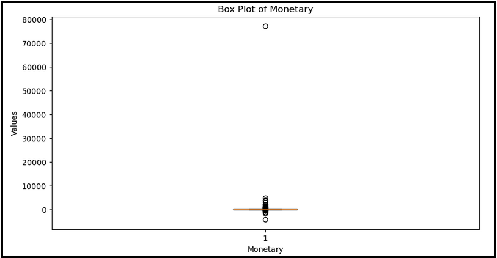
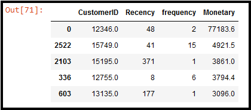
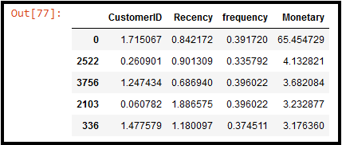
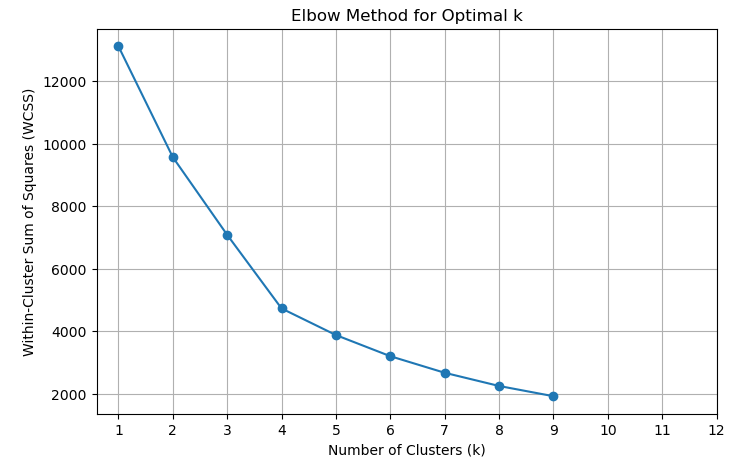
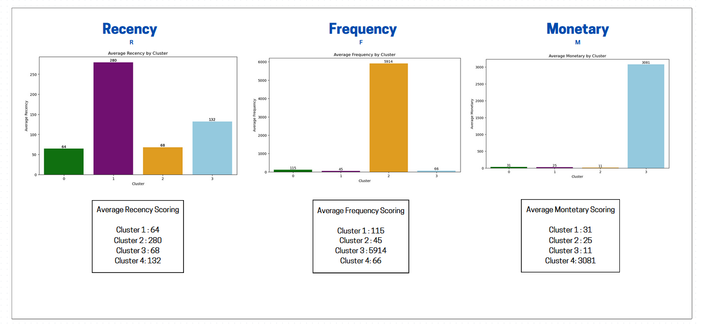
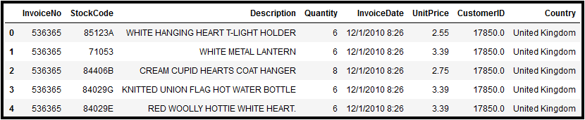
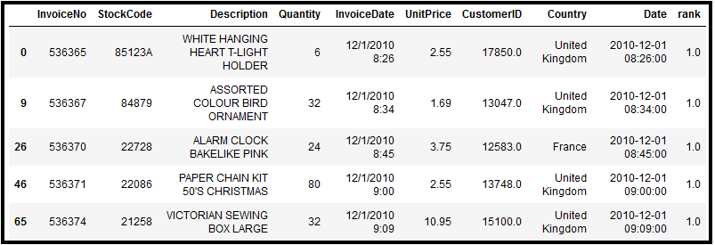
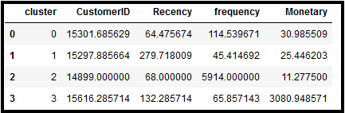

E-Commerce Analysis
Objective: First, provide a comprehensive breakdown of the different customer groups within this E-Commerce company. Second, demonstrate how effective customer segmentation can be used provide valuable insight to product development teams and resource allocation decision-making.
Key Takeaways:
Monetary's Extreme Outlier
When building boxplots for the RFM metrics to identify outliers, we came across an extreme outlier for Monetary.
This outlier here has a monetary score of 77183.6, or alternatively, possesses a Z-score of 65.5. Based on the staggering
amount of standard deviation, it almost looks like a data entry error. However, given that the dataset has already gone
through several cleaning workflows, its origins might not be so straightforward,
and it is worth investigating how this data point came to be. That being said, for our model's sake, we have to remove it as
this point would easily cause our model to begin overfitting.



Optimal Number of Clusters
Based on the elbow method WCSS plot, we identify the inflection point at k=4, and therefore, our optimal number of
clusers is 4.

RFM Cluster Scores & Analysis
After building our segmentation model, we calculate the average RFM scores for each cluster group.

Note: On the plots the clusters are labelled 0,1,2,3 but we will be referring to them as 1,2,3,4.
Kindly remember that the recency metric is slightly inverted: Recency represents how recently they made their purchase by tracking the number of days since their last purchase. In other words, a high recency score means many days have passed since their last purchase. Similarly, a low recency score means they are recent customers. The others are straightforward metrics, Frequency means how frequently they make purchases and Monetary means how much they're spending with their purchases.
Cluster 1
Ranks low in recency, relatively high in frequency, and moderate in monetary. This cluster likely represents the customers who are actively engaged with our products, but their monetary value suggests this group also tends to make value-concious spending decisions.
Cluster 2
Ranks high in recency, low in frequency, and relatively low in monetary. This cluster likely represents the customers who were unsatifsied with our product and are actively disinterested in our current offerings and or promotional deals.
Cluster 3
Ranks low in recency, extremely high in frequency, and low in monetary. This cluster likely represents the customers who make purchases recently and regularly, but who strongly graviate towards lower spending choices. For exmaple, regularly shopping for lower-priced items while keeping a keen eye for discounts or clearance deals.
Cluster 4
Ranks moderate in recency, low-moderate in frequency, and extremely high in monetary. This cluster likely represents our high-value customers who show strong interest in our expensive premimum products and are most willing to spend more money than any other customer group.
Product Development Team Recommendations
1. Product Bundles
Targeting cluster 1, we could research into the top 3 most commonly purchased items within this group and then offer a bundle purchase promotion where one item from the premier group is paired with a slightly less commonly bought items within this group. The goal here is not trying to get this consumer group to purchase a new product, but rather incentivize them to purchase a product they typically would wait longer on. Additionally, based on the higher monetary score, we could experiment with item pricing combinations within this group to determine the optimal selling point.
2. Root Cause Analysis
Targeting cluster 2, we could designate a team to research each and every one of the purchase orders made by cluster 2 and identify patterns and trends which correlate or perhaps even provide a causal explanation regarding why the customer was disinterested in returning for another purchase.
3. Engagement Products
Targeting cluster 3, we could design exclusive limited-time offer thank them for being a loyal customer, and then additionally provide discounts on typically higher-priced items they otherwise normally wouldn't consider due to the cost. The tricky part to this strategy, however, is that even with thorough research, it would be difficult to determine which products this consumer group has strayed away from due to complete disinterest versus which products have been shelved simply due to its price. If we had the right cookies enabled on our platform then it could be possible to identify items in which the user has placed into their cart, but not purchased as a guideline.
4. VIP Programs
Targeting cluster 4, we could implement extra privileges to this consumer group which enhances their customer experience and or provides a sense of exclusivity. For example, we could borrow from Artizia's "Clientele" program and slowly rollout the newest and best-selling products in waves, with this consumer group being first-in-line. Either way, some form of promotional offer which facilities a strong sense of pride within the customer.
Building the customer segmentation model in Python...
Here is the inital CSV given:

The customer segmentation workflow we implmemented can essentially be summarized in the following 7 key steps (excluding sub-steps):
1. Transform the data as necessary (e.g. aggregate, new fields, etc.) in order to obtain the RFM scores.
2. Obtain the RFM scores and merge them to create one final RFM dataset
3. Clean the RFM dataset, identifying and adressing duplicates, null values, outliers, etc.
4. Standarize the dataset (we'll use StandardScaler from SKLearn)
5. Determine the optimal number of clustering groups (we'll use Elbow Method)
6. Visualize the clusters in the manner most suitable for interpretation
7. Interpret and contexualize the resulting model in terms of business operation & strategy
Steps 1,4, and 5 are provided in detail below, with remaining steps posessessing less noteworthy code.
1.
The inital dataset was given in tabular form, meaning each row corresponding to a transaction. This tabular nature meant that for
the recency metric, we were required to transform the dataset somehow such that each customerID only had 1 associated row. Furthermore,
that transaction row had to be most recent transaction.
customers['rank'] = customers.sort_values(['CustomerID', 'Date']).groupby('CustomerID').cumcount() + 1

This problem was solved by first sorting the dataframe by CustomerID and then by
Date within each CustomerID. Afterwards, we created a calculated field called 'rank' through the .cumcount() function, which allowed us to track each
transaction in sequence based on the sorted date. From here, it was just a matter of creating a new column 'recency' based on the number of elapsed time
between the earliest transactions (those with rank value of 1) and the most recent transaction (those with the highest rank value).
where 'rank' had a value of 1 (i.e. it was the first transaction).
The frequency and monetary metrics were much easier calculations to be had.
4 & 5.
Step 4 & 5 was suprisingly tricky as we know for the downstream cluster analysis, we want to perform the predictive machine learning algorithm KMeans
on the standardized dataset. However, for business & strategy interpretations, we want the true values but with an added column representing the
algorithm's cluster assignment.
The following codes creates two RFM dataframes, one standardized and one not, and then begins a loop to create
the WCSS scores for the elbow plot. Afterwards, we apply the KMeans algorithim to assign the cluster predictions and
calculate the mean RFM values within each cluster. From there, we achieve our desired results of a customer segmentation model with their
corresponding recency, frequency, and monetary scores.
RFM_set_new[columns] = scaler.fit_transform(RFM_set_new[columns])
RFM_S = RFM_set_new.drop('CustomerID', axis=1)
RFM_Pre_S = RFM_df
for k in range(1,10):
kmeans = KMeans(n_clusters=k)
kmeans.fit(RFM_S)
wcss_list.append(kmeans.inertia_)
kmeans = KMeans(n_clusters=4, random_state = 0)
kmeans.fit(RFM_S)
predictions = kmeans.predict(RFM_S)
df_rfm = pd.DataFrame(RFM_Pre_S)
df_rfm['cluster'] = predictions
avg_cluster_df = df_rfm.groupby(['cluster'], as_index=False).mean()

Thank you for taking the time to take a look at my work!
- © Creative Commons
- Design: HTML5 UP